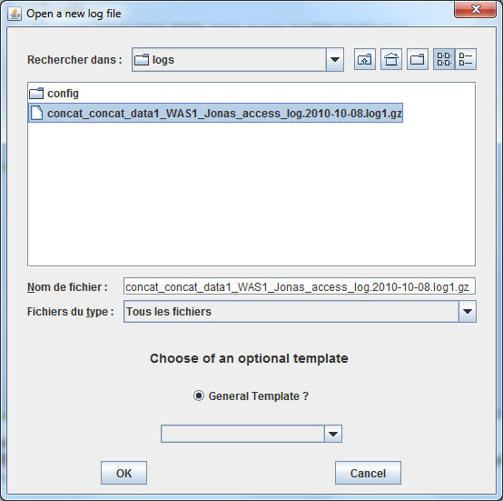
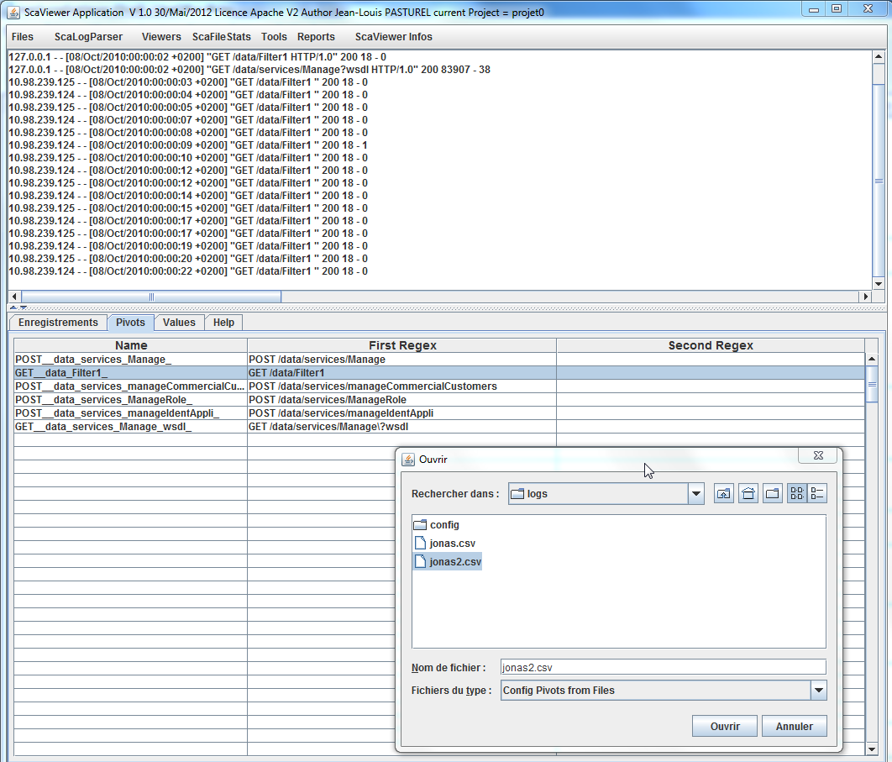
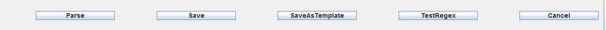
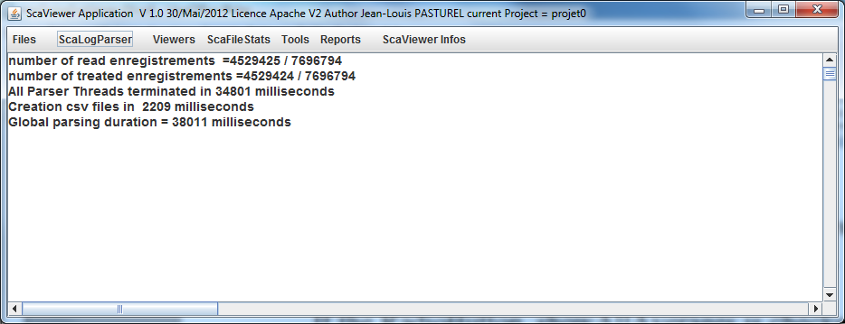

ScaLogParser :Enregistrements tab
With this menu, you transform a log file to a csv file that can be graph with JfreeChart ( Menu Viewers)
The Menu ScaLogParser ( in fact a Button) open a customized FileChooser in the directory %workspace/<Project><last_scenario>/logs
You have to choose a file.

There are 3 possibilities to config before parsing :
with no template, ( ex-nilho) => ComboBox empty
with a local template, only valid for the current project General Template unselected and a template chosen in the ComboBox
with a general template, shared by all projects General Template selected and a template chosen in the ComboBox
The screens below, show the more general configuration with no template
After clicking on OK Button, the screen below appears :
Parsing Start Date / Parsing End Date : new in version 1.2.0 to set a beginning and an end date for parsing. It is useful when log files are large. See the table below for the format.
In the TextArea at the top of the Windows, there are the first 20 lines of the log file to parse
In the buttom part, there is a Tabbed Pane with 4 tabs
The first tab has the functions :
to define what is a record in the source file ( Beginning/End of record, Locale …)
to retrieve the date of the record (explicitly or implicitly).
to define the format of the output CSV file( Date format, separator)
Automatic graph or not after parsing
File In parameters :
|
Parameters |
Signification |
Example |
|
Path File In |
Full path of the source file. Automatically filled by swingScaViewer when chosen |
|
|
Step of Aggr in ms |
Measurement period of result aggregation in millis-seconds. |
1000 |
|
Start of Enreg (Regex) |
Regular expression ( Perl Regex) to find the beginning of the record. Mandatory. |
\d{4}-\d{2}-\d{2} |
|
End of Enreg (Regex) |
Regular perl expression to catch the end of a record. If this field is empty, it signifies that each line is a record.
|
If there is no evident end of record pattern, you can set it the same pattern as the pattern of the beginning of the record. swingScaViewer takes care not to skip any record. |
|
Regex including enregs |
Regular perl expression that permits to include all records that are interesting. |
Exclude feature has priority over Include feature. |
|
Regex excluding enregs |
Regular perl expression that permits to exclude some records that are not interesting. |
|
|
Step within enregs or regex for step |
Used when Explicit Date is unselected. Define the increment relative to the parameter fileIn.startDate under 2 ways. => regexp a perl regex val , a value in between 2 records ( unit is given by Unit of Step) |
(?![^=]=)\d+
val=1000
(*) See more explanation after this table. |
|
Locale English |
Choice of the Locale for File In ( for Date and representation of Double) |
Selected (as possible) |
|
Explicit Date |
If selected, means that every record of the file contains an explicit date. If not ( Implicit) the date must be computed. |
Selected (as possible) |
|
Start Date ( DateInMillis or Implicit case) |
Definition of a beginning date with the Java DataFormat defined by the field Java Format of Date
|
1970/01/01 00:00:00 ( 0 of TimeStamp) Used when Explicit Date is unchecked, if so an increment must be defined. or when Regex of Date is set to dateInMillis with explicit dates. |
|
Unit Of Step |
Unit of the increment. Possible values are s,ms,micros,nanos |
Ms |
|
Regex of Date |
Regular expression ( perl regex) to catch the date. The date must be in the first selected group. In case of date in timestamp in millis the pattern to set is dateInMillis. |
^([^:]+[^ ]+) if dateInMillis in java date format, you can put here two regex separated by a blank to extract the date in millis ( the 2 regex must not contain a blank)
|
|
Java Format of Date |
Give the Java DateFormat of the records of the log file.
|
[dd/MMM/yyyy:HH:mm:ss Z] or dateInMillis or dateInMillis,<mult> mult=1000 if date is in seconds The dateInMillis format, compute date, starting with the beginning date filled in the Start Date ( DateInMillis or Implicit case) parameter |
|
Parsing Start Date |
The date for the beginning of parsing |
Format must be : yyyy/MM/dd HH:mm:ss
|
|
Parsing End Date |
The date for the end of parsing |
Format must be : yyyy/MM/dd HH:mm:ss
If beginning date >= end date, there is no control for the date. So with the two dates set by default to 1970/01/01 00:00:00, there is no control of date. |
File Out parameters :
|
Parameters |
Signification |
Example |
|
Folder for Files Out |
Full path of the target directory files. Automatically filled by swingScaViewer when chosen |
|
|
Field separator |
Separator for the output CSV file |
; |
|
Java Date Format out |
Format DateFormat Java of the csv generated file |
yyyy/MM/dd HH:mm:ss |
|
Locale English |
Choice of the Locale for File In ( for Date and representation of Double) |
Selected (as possible) |
|
Generate AllAverages Only |
When selected, only the average of the values parsed are generated on a single file. |
The name of the file is allAverages.csv |
Advanced parameters :
|
Parameters |
Signification |
Example |
|
Numbers of Actors |
Number of actors ( akka Actors) to treat the log file |
2 or nb cores * 2 ( if hyperthreaded) |
|
Is start date |
If selected, means that the date is the date of the beginning of the request |
Selected depends of file logs. |
|
Correction to date |
When the first value is expressed as a duration the 3 strategies are : if 0 => no modification of the date if 1 => add the duration to the date |
Select 0 or 1 or -1 |
|
View AllAverages after parsing |
If checked, at the end of the parsing, the file allAverages.csv is graphed automatically. |
Checked/Unchecked |
|
Debug Mode |
For debugging with a little extract of the log file. There is a log trace in the directory <swingScaViewer_Home>/logs |
Checked/Unchecked |
|
Exhaustive Pivots Parsing |
Useful when 2 pivots have inclusive regex for example
GET\s/MyHome/ GET\s/
If not checked, the URLs matching the first regex are not parsed by the second regex |
Checked/Unchecked If you are sure that regex are all not inclusive, unchecking is faster for parsing. |
|
Generate Enregistrements to a File |
Help also for debugging to see if you correctly parse the record of the log file. Useful when the record are spanned in several lines of the file. |
Checked/Unchecked |
The analysis of access-logs is based on the utilisation of regular expressions that are described in the JDK Javadoc. Look at Pattern class :
http://java.sun.com/javase/6/docs/api/java/util/regex/Pattern.html
(*) The different forms of increment are :
<regular expression>
Give here a regular expression to match the increment. The tool test regexp can help you ( see later in this document).
val=<Constant value of the increment>
Set here the constant value of the increment, the unit is given by the parameter Unit of Step . A To be be used when there is no explicit date in the access logs and you know the period of generating every record.

The Value tab is divided in 5 columns :
Name Value : in this column you set the name of the value that you want to follow ( the name is free)
First Regex / Function : in this column, you set the mean for extracting the value, there are two ways to extract a value :
regex ( the default shown on the screen-shot above). You put a regex to extract the value. If you are not able to extract the value with this first regexp, you can apply a second regexp( Second Regex / Parameters) to extract the final value from the first matching.
function=<nameOfClass>
It is an advanced feature, that permits to write a kind of plug-in to swingScaViewer ( useful when the value can't be extracted directly example : sum or difference of 2 values in a record , computing GC throughput...).(**) See below the whole explanation of this feature.
Second Regex / Parameters
A regex when needed as explained above or parameters when using plugins/fuction
Unit :
the unit of the value extracted.
Change Scale :
permits to change the scale of the value to match the unit chosen.
(**) key word function :
It is an advanced topic and it needs to know programming in Scala language.
We must write a Scala class with the default package, which has 2 methods where the prototypes are given below :
def metInit(tab:Array[String]=null)
def retour(params:Array[String]):Double
There are examples in the directory <swingScaViewer_Home>/myPlugins . The classes ( byte-code) must be put in the archive jar directory : <swingScaViewer_Home>/myPlugins/myPlugins.jar. This archive jar is also set in the classpath of the script swingScaViewer.cmd ( .ksh).
The return value of the method retour is a Double ( it can be also Double.NaN, this case is treated).
In the column First Regex / Function , the name of the class is set (without the suffix .class) :
function=Add2Values
In the field Second Regex / Parameters, we can set all the necessary parameters to execute the function. The parameters are separated by a separator defined in the first character of the field. Be care when there is blank in a parameter to choose another separator than a blank space. In case where no parameter is needed, you must set this field with ;dummy to avoid an error.
Example :
,param1,parma2,param3
, is the separator, param1 to param3 the parameters.
The record is passed by default to the class, and it is the params(0) of the parameters of the function retour. The others parameters are added at params(1) and so on...
Tip :
When the name of a class begins by Conc, the function can be used in multi-threaded parsing. If one class does not begin by Conc in the Value Tab, the parsing is automatically mono-threaded ( The field Nb of Actors is set automatically to 1)
Look at the pdf document § Annexe part an example of function.

What is a “pivot” ?
In a record, there are other information that are not numeric but permit to sort the values. Example URLS in Apache Access Logs, or other WAS access logs , a Pivot can be a specific pattern of URL as shown above.
This tab has 3 columns :
Name :
The free name of the Pivot
First Regex : You put a full string value if you can or a regexp to extract the value. If you are not able to extract the value with this first regexp, you can apply a second regex( Second Regex)
Second Regex to extract the final Pivot from the first matching.
Hint 1 : If beforehand you have parsed this file with scaFileStats ( see in the pdf document) and saved the result table in a csv file in the logs directory, by right clicking in the table Pivot and choosing the csv file saved, the rows of the Pivot tab are automatically filled. After you can suppress, modify, insert other rows.

Hint 2 : For the column First Regex , if you use full String as possible (without pattern regex as \s\? ...) , the treatment is faster.
Principle of generated files in the csv directory
If you have 2 values in the Tab Value ( Duree and SizeRequest) and 6 Pivots in the tab Pivot, the 8 generated files are generated as :

fic_Duree_SizeRequest.csv => global, without Pivot
The last 6 files are the csv files where each file is bound to a Pivot .
allAverages.csv ( Contains the average column of the 7 files above)
Help Tab:
This text. The file <swingScaViewer_Home>/config/scaViewer.properties permits to choose the lang=> variable scaviewer.lang.help

TestRegex:
The button TestRegex permits to test regex in a Dialog box. See the Menu tool for more explanation.
Save :
The button Save saves the configuration and can be be reused for parsing another time
SaveAsTemplate :
The button SaveAsTemplate permits to save a template of the configuration that will be used as pattern for the same kind of access log file.

We can save this template on the context of the project ( RadioButton General Template ? Unchecked), or in a General Context ( can be used by others projects) when RadioButton General Template ? is checked.
Parse Logs :
The click on Parse Logs starts the Parsing :

This screen is shown at the end of the parsing, without graphing the allAverages.csv file because the radioButton View AllAverages after parsing was unchecked.
If the RadioButton View AllAverages after parsing is checked before launching the parsing, the allAverages.csv is graphed as shown below :

Below, the table describes, the the principle for using plugin / functions .
Plug-ins can be added, in plugins folder and plugings/myPlugins.jar archive. Read the pdf manual that describes how to write a plugin
|
Plugin name |
Description |
Parameters |
Comments and Examples |
|---|---|---|---|
|
ComputeHeapGC1 |
Parse the GC logs HotSpot, when the GC1 strategy is set. Mono-threaded |
;<the_nameOfValue> |
The nameOfValue is one of the values below: BeforeGCHeapTotal BeforeFullGCHeapUsed BeforeFullGCPermGenUsed BeforeYoungGCHeapUsed BeforeYoungGCPermGenTotal BeforeYoungGCPermGenUsed NbYoungGC NbFullGC AfterYoungGCHeapTotal AfterYoungGCHeapUsed AfterYoungGCPermGenTotal AfterYoungGCPermGenUsed ParallelTime AfterFullGCHeapUsed fterFullGCPermGenUsed DurationFullGC DurationYoungGC |
|
ConcCompute2Values |
Compute 2 values extracted from a record 2 regex to extract each value. Op can be “+”,”-”,”*”,”/” Multi-threaded |
;<regexp1-value1>;<regexp2-value1>;<regexp1-value2>;<regexp2-value2>;<op> |
;value1=\d+\.\d+;\d+\.\d+;value2=\d+\.\d+;\d+\.\d+;+ |
|
ConcCountItems |
Count items in a record Multi-threaded |
;<regexpItem> |
;locked |
|
ConcTuxCloptr |
Example of customized plug-in : Retrieve the time duration of Tuxedo services when the option Clopt -r is set (Tuxconfig) Need a dummy parameter |
;dummy |
;dummy |
|
TraiterHotspot5And6 |
Parse the GC logs HotSpot, when the Parallel or CMS strategy is set. Mono-threaded |
;<the_nameOfValue> |
The nameOfValue is one of the values below:: sizeYoungGenerationBefore sizeYoungGenerationAfter sizeOldGenerationBefore sizeOldGenerationAfter sizeHeapBefore sizeHeapAfter sizePermGenBefore sizePermGenAfter minorGCDuration throughput fullGCDuration cmsConcurrentMarkDuration cmsConcurrentSweep cmsConcurrentPreclean fullGCSizeYoungGenerationBefore fullGCSizeYoungGenerationAfter fullGCSizeOldGenerationBefore fullGCSizeOldGenerationAfter fullGCSizeHeapBefore fullGCSizeHeapAfter sysTimeSpent userTimeSpent realTimeSpent |
Below the source of ConcCompute2Values :
/*Copyright
2012 Jean-Louis PASTUREL
*
* Licensed under the Apache
License, Version 2.0 (the "License");
* you may not use
this file except in compliance with the License.
* You may obtain
a copy of the License at
*
*
http://www.apache.org/licenses/LICENSE-2.0
*
* Unless required
by applicable law or agreed to in writing, software
* distributed
under the License is distributed on an "AS IS" BASIS,
*
WITHOUT WARRANTIES OR CONDITIONS OF ANY KIND, either express or
implied.
* See the License for the specific language governing
permissions and
* limitations under the License.
*/
class
ConcCompute2Values {
def metInit(tab:Array[String]=null) {
//
To reinitialise static variable if necessary
// Nothing to do
here
}
/**
*tabStr(0) is the record to be treated.
Afterwards the regex by tuple of 2 items for an extraction in two
phases
* regex tabStr(1) and tabStr(2) to extract the first
value
* regex tabStr(3) and tabStr(4) to extract the second
value
* tabStr(5) is the operand (“+”,”-”,”*”,”/”)
* @param tabStr
* @return
*/
def
retour(tabStr:Array[String]):Double=
{
var
retour=Double.NaN
// extract first value
var
regex1=tabStr(1).r
var ext1=regex1.findFirstIn(tabStr(0))
var
val1=0D
var val2=0D
if (None != ext1) {
//
println("ext1Val1="+ext1.get)
val regex2=tabStr(2).r
val
ext2=regex2.findFirstIn(ext1.get)
if (None != ext2) {
val1 =
ext2.get.toDouble
} else {
return Double.NaN
}
} else
{
return Double.NaN
}
// extract second
value
regex1=tabStr(3).r
ext1=regex1.findFirstIn(tabStr(0))
if
(None != ext1) {
val regex2=tabStr(4).r
val
ext2=regex2.findFirstIn(ext1.get)
if (None != ext2) {
val2 =
ext2.get.toDouble
} else {
return Double.NaN
}
} else
{
return Double.NaN
}
//println ("tabStr(0)
="+tabStr(0))
//println ("val1="+val1+"
;val2="+val2)
// return the result of the operation
tabStr(5)
match {
case "+" => val1 + val2
case "-"
=> val1-val2
case "/" => if (val2 !=0) val1 / val2
else Double.NaN
case "*" => val1 * val2
case _ =>
Double.NaN
}
}
}
Below some examples of regex to extract datas from a line:
10.170.227.191 - - [21/Jan/2008:18:55:26 +0100] "POST /synthetic/services/ConsommationPort HTTP/1.1" 200 2433 – 5087
That must be read from the beginning of the line ( character ^ ) and after one or several numbers followed by a dot ( \d+\.) , repeated thre times and terminated by one or more number ( \d+).
The dot character is escaped because it has a regex signification.

so you extract the IP address at the beginning of the line.
That must be read from the first opening square bracket ( \[ ) that must be escaped because it has a regex signification , and after we take all characters that are not closing square bracket, note that in this context, the ^ character is the negation operator when it is not the first character of the regex=> ( [^\]]+ ) , and the matching is terminated by the closing square bracket ( \] )
This regex extracts the date from the line :

Note : Be care of the difference of signification of the ^ character when it is the first character of the regex, and when it is somewhere else.
That must be read from the first double quotation marks ( " ) and after all characters that are not double quotation marks ( [^"]+ ) , after a double quotation mark ( " ) , after one or more space or tab characters ( \s+ ), and terminated by 3 digits ( \d{3} ) .
\d{3} )
this regex extracts the URL and the http status of the regex from the line :

To be read, beginning from the end of the line ( last character is $ ), before the end of the line one or more digits ( \d+ ) and before one or more space or tab characters ( \s+ ) .
this regexp extract the last number in the line, for this Apache logs, it corresponds to the duration of the request in micros-seconds.